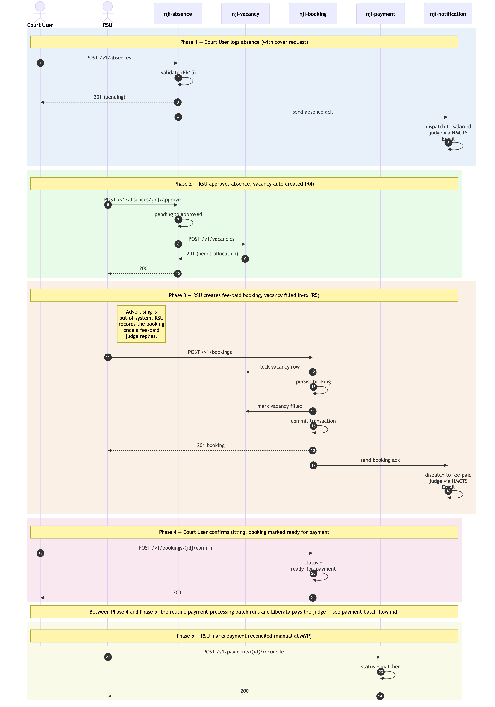

Absence → Vacancy → Booking → Sitting → Reconciliation
Sequence diagram of the user-initiated NJI operational cycle: a Court User logs an absence for a salaried judge; the absence triggers a vacancy; RSU fills the vacancy with a fee-paid booking; the Court User confirms the sitting (marking it ready for payment); RSU reconciles the payment after the batch and external systems complete.
Five phases, each driven by a user action. Phases are colour-tinted in the diagram.
Not in this diagram
User-initiated activities only. The following sit between Phase 4 and Phase 5 but are not drawn because they are not user-initiated:
- Payment-processing batch — picks up bookings with
status = ready_for_payment, SQL-JOINs across confirmed bookings + sittings, generates the JFEPS Excel, persistspayments+payment_schedules, dispatches via email to the Payment Authoriser. Runs on a schedule (e.g. end-of-week). See./payment-batch-flow.md. - Payment Authoriser → JFEPS / Liberata — authoriser reviews the email and uploads to Liberata via the existing JFEPS workflow. Out-of-band.
- Liberata processing — Liberata pays the fee-paid judge. External system.
Cross-cutting steps omitted
Apply to every Court / RSU → service call:
- All UI → service calls flow through Azure API Management.
- Each service's
JWTFiltervalidates the JWT signature against HMCTS IdP's JWKS before the controller runs. - The same
JWTFiltercallsPOST /authz/checkagainstnji-authorisationfor role + Region/Area scope + activation flag (FR58). - Cross-service calls forward the user's JWT.

Source: ./absence-to-reconciliation.mmd
(Mermaid). Regenerate with
mmdc -i absence-to-reconciliation.mmd -o absence-to-reconciliation.png -w 2400 -s 2 --backgroundColor white.
Phase summary
| Phase | Driver | Architectural rule | Outcome |
|---|---|---|---|
| 1 — Absence logged | Court User | Validation (FR15-style: ticket-type + start date required) | Absence record created (status: pending); ack email to salaried judge |
| 2 — Absence approved | RSU | R4 — approval triggers vacancy creation | Vacancy created (status: needs-allocation) |
| 3 — Booking created | RSU | R5 — booking creation marks the linked vacancy as filled in the same transaction (persistence detail in Data Architecture) | Booking persisted; vacancy filled; ack email to fee-paid judge |
| 4 — Sitting confirmed | Court User | State transition; record marked ready for the payment batch | Booking status = ready_for_payment (the batch picks
this up later) |
| (out of scope) | (none — batch / external) | Routine payment-processing batch + Liberata processing | JFEPS Excel generated, dispatched, uploaded; judge paid |
| 5 — Reconciliation | RSU | Manual at MVP (automated reconciliation feed from Liberata is post-MVP) | payment_reconciliations.status = matched |
Where to find more detail
| Detail | Location |
|---|---|
| Service responsibilities and key functions | ../../architecture.md
→ Repository List |
| Data Architecture (shared schema, per-service DB roles, R5 pessimistic-lock pattern) | ../../architecture.md
→ Step 4 Data Architecture |
| Integration Points — internal call patterns + external systems (HMCTS Email, JFEPS / Liberata) | ../../architecture.md
→ Step 6 Integration Points |
| Authentication / authorisation cross-cutting steps (omitted from diagram) | ../../architecture.md
→ Step 4 Authentication & Security, ../../architecture-summary.md
→ Authentication & Authorisation |
Per-table column-level detail (bookings,
vacancies, payments,
payment_schedules, payment_reconciliations,
notification_dispatches, auth_users) |
../data-tables.md |
| Reconciliation lifecycle (MVP manual; post-MVP roadmap) | ../../architecture.md
→ Step 4 Data Flow — Canonical Operational Cycle; PRD
FR46 |
| Retry-safety conventions (natural-key uniqueness, optimistic locking, pessimistic row locking) | ../../architecture.md
→ Data Architecture and ../data-tables.md |
| JWT propagation pattern (the cross-cutting auth step omitted from the diagram) | ../conventions.md →
Communication Patterns / JWT propagation |
| Service-identity question for non-user-initiated flows (which the payment batch is) | ../gaps.md → G7 — explicitly
post-MVP open item |
Source: _bmad-output/planning-artifacts/architecture/sequence-diagrams/absence-to-reconciliation.md